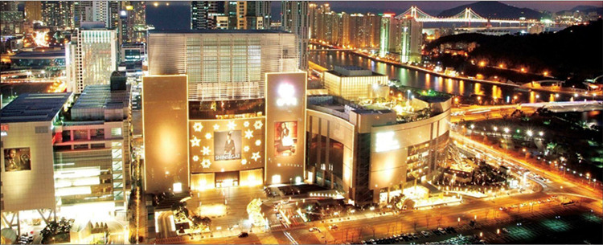

大型购物商场和百货公司
#Centum City（Shinsegae Centum City Spaland）#
釜山Centum City 是韩国各地购物达人们喜爱的休闲购物名处，作为釜山新都市的 Centum City 还拥有着“世界最大百货店”的殊荣。以新世界 Centum City 为代表，乐天Centum City 等大规模的百货商店汇集于此，向顾客们展示走在时尚前沿的世界名品。

图：釜山Centum City 夜景
这里以休闲购物为中心，拥有画廊、溜冰场、公园、文化中心等休闲娱乐兼文化设施，体现了韩国一站式复合型购物文化空间的精髓。新世界Centum city 的名品卖场内，顾客们可以购买、欣赏到最前沿的时尚名品。百货店内还会经常举办时装秀等多种时尚活动。
这里有22 个温泉池和13 种主题蒸汽房。成人周末入场费14000 韩币。整个商场还有退税，1 楼和5 楼都可兑换钱币，5 楼还可以汇款到国外。
地址：釜山海云台区佑洞 1496号
交通：釜山地铁2号线Centumcity站下车，与新世界相通
电话：+82-51-7452201
#釜田市场#
釜田市场是两个大建筑和中间的小街道组成的大规模的历史悠久的市场。这里不但有生参，干参、红参、人参等人参制品，还有传统茶，灵芝、蜂蜜等各种保健食品，都可以比市中便宜10% 的价格购买到，如果大量购买的话，可以便宜50%。
地址：釜山釜山镇区中央大路783号23
开放时间：周一至周日04：00-19：00
到达交通：地铁1 号线釜田站下车步行
#乐天免税店（釜山总店）#
乐天免税店釜山店位于地处市区的乐天百货店釜山店八楼，距离金海国际机场和釜山港约40分钟车程，交通非常便利。
地址：釜山釜山镇区伽倻大路772乐天百货商店釜山总店8层
交通：釜山地铁1、2号线西面站

图：乐天百货
商铺市集和主题购物街
#釜山唐人街#
位于釜山站对面的唐人街又有上海街之称。自1884年与中国上海结为友好城市之后，釜山出现了不少华侨学校，中国领事馆也于1884年在釜山设立，这里便渐渐发展成为华侨的聚居地。依中国风格装扮的这条街上，最主要的建筑物便是釜山与上海共同竖立的“上海之门”，两侧分布有多个中国餐厅，深受国内外游客的喜爱。
地址：釜山东区
交通：釜山地铁1号线釜山站下，过地下通道至釜山站对面即可见。
开放时间： 全天开放
图：釜山唐人街
#西面地下商业区#
西面是釜山地铁1号线2号线交汇枢纽地，由于便利的地理地址，也汇聚成了今天釜山繁华而又人气高棚的商业区。
麻雀虽小，但是五脏俱全，这里的衣服不论是颜色，风格等都是当年最新款，价格也是相较于其他地方来说算平民价。因此是釜山年轻女性受追捧的地方。除了流行服饰，这里有着许多特色小店，眼花缭乱的小饰品店，风格迥异的精品店等。
地下商街的化妆品业是随处可见，各种知名的品牌充斥着每个店铺。而且这些店铺也都是隔三差五的打折。
“西面1号线”还具备各种娱乐设施和场所，例如电影院、剧场、游戏房。在每年的春秋两季，这里会搭建舞台，举行大规模的庆典活动。每逢周末，都会有年轻的业余歌舞爱好者，来此为游人演出，演出形式多种多样。
交通：乘坐地铁1号线（或者2号线）在西面站下车即可。
地址：釜山市釜山镇区釜田洞
图：西面地下商业区
#南浦洞购物街#
南浦洞主街是以购物为主，两边大型品牌店，促销店以及国际大牌点充斥着南浦洞。要说这里最大的特点就是多元，时尚。从服装到鞋子，再到各种包包等玲琅满目，让人应接不暇。
南浦洞吸引大量游客前来另一个原因是这里的小吃一条街。每每来到这里都是人头攒动，排着尝尝的一条队。有釜山特色炒年糕，以及只有釜山才能吃到的正宗鱼糕以及糖饼。
地址：釜山中区富平洞1街
交通：乘坐地铁1号线到南浦下车，1号出口即可。
图：南浦洞购物街
本地品牌
#SBENU#
SBENU是韩国新兴运动品牌，并主要销售各种款式的运动鞋。在韩国，许多明星和主持人都穿过SBENU的鞋代言。更因为IU和宋再临的代言，更使此品牌在年轻人的圈子里蹿红。目前“SBENU”的S、B、E三个系列的运动鞋特别受欢迎。
#Parkland#
一家韩国男装品牌，因为赵寅成代言而广为人知。他在《那年冬天风在吹》里面穿的衣服就是这个牌子的，现在在中国已经有Parkland的旗舰店了。
#HORMIGA#
100%纯手工制作的HORMIGA（豪美嘉）是一个不断追求完美，超越自己的品牌。在韩国广受大家的喜爱，其定制服务也满足很多追求个性化却又不失品质的消费者的需求。
特色礼品
#高丽参#
这是一种高级营养保健品，可以促进血液循环，防止疲劳，增强免疫力，并且对预防糖尿病和高血压等方面都有非常不错的疗效；可以在南浦洞地区购买，价格略贵。
图：高丽参
#鱿鱼干#
釜山鱿鱼干腥味较小，鱼肉紧实，由于不需要特殊的加工，所以它保存了鱼肉的味鲜肉美，营养丰富，成为了人们非常喜爱的一种零食。在釜山海鲜几乎是必带的特产，买一些各类鱼干带回家，与家人分享旅游快乐。
#化妆品#
釜山有种类繁多，质量上乘，物美价廉的彩妆。
韩国化妆品基本上是在走 H&M 和 Zara 少量多款的“快时尚”路线——韩国一直在拓展护肤品种类，例如近年来很热门的气垫 BB 霜。除了产品本身的创新，韩国人还会主导彩妆流行，比如从韩剧女主角那儿流行起来的一字眉和咬唇妆，又引发了新一波的产品创新。
图：韩国化妆品
#紫菜、海苔#
釜山与其他沿海城市无异，海产品便是其特色，海苔、紫菜等海产质量好，种类丰富。但是建议不要到导游推荐的土特产店中购买，可以到超市等地方购物，品种相差不多，而价格更加实惠。
图：釜山紫菜
退税
在韩滞留期间为6个月以内的外国游客在相关税务机关指定的商店中，只要购买满30，000 韩元，就可以在付款时向导购说明需要退税。会让你填写一张退税单。
上面是你的基本信息：姓名、家庭住址、国籍、护照号，最后有签名。
导购会给你一个大信封，里面装着的是你的价格小票、填写的退税单。一般50，000 韩元是退1，500 韩元。给你的小票上会写明退税金额。
出境时在机场先不要托运装有所购商品的行李，向海关出示发票和商品并加盖确认图章后再托运。在机场就近的退税窗口（CASH REFUND）出示发票，获取退还所购商品增值税总额的现金。如因时间紧张无法在出境时退税，也可回国后在国内的退还所出示机场的确认图章领取退税金额的现金。
这些税金一般被用做韩国居民的社会福利金，而非韩国居民所购商品在出境时，经确认后，通过相关法定步骤可获得返还。适用税种： 增值税 VAT、Value-added tax（10%）和特别消费税（贵金属等高档消费品之类）